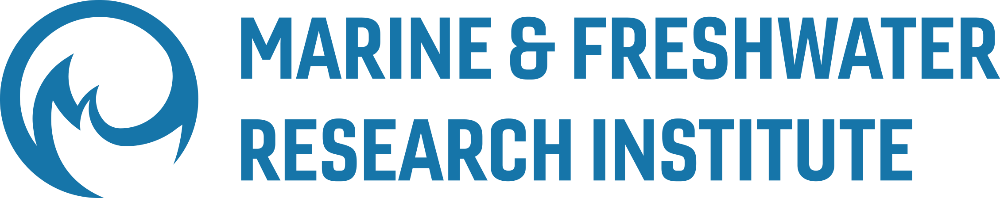
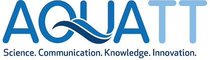
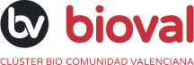

Table Logo
Awarded to the Reich Lab, Harvard University – Various ancient human DNA
projects
-
National Institute of Health, USA
-
John Templeton Foundation, USA
-
Paul Allen Family Foundation, USA
-
Private funding, USA and EU
The Government of Iceland, Ministry of Food, Agriculture and Fisheries
-
Examination of the feasibility of obtaining products from heterotrophic
microalgae (Thraustochytriaceae) in culture
R&D Fund of the Government of Iceland
-
Production of high-value products from macro algae
-
Examination of the viability of obtaining products from heterotrophic
microalgae (Thraustochytriaceae) in culture
-
Chemically controlled lipogenesis of microalgae for increased product
yield
The Icelandic Center for Research
-
Utilization of by-products from fisheries and agriculture to formulate
media for heterotrophic microalgae
-
Scaling up of cultures for the production of polyunsaturated omega-3
fatty acids using heterotrophic microalgae
-
Several grants for laboratory equipment and infrastructure

Marine and Freshwater Institute
-
Several grants for research on the population genetics and the evolution
of redfish
-
The use of molecular genetics in the breeding of halibut for culture
SSNV of the Regional Government of Northwest Iceland
-
Economic Development Fund
-
Utilization of by-products from fish processing for media formulation
for heterotrophic microalgae
-
Cultural Development
-
Publication of Iceview Magazine, Volume 1
-
Publication of Iceview Magazine, Volume 2
-
Publication of Iceview Magazine, Volume 3
University College Cork
Table Logo

|

|
European Commission
-
EU-COMETT Program, University Enterprise Training Partnership, EU
-
Training and Mobility of Researcher Program (TMR) of the EU

Bioval, Regional Government of Valencia, Spain<
-
Development of biosensors
Programa Torres Quevedo, Government of Spain
-
Development of biosensors
My Website